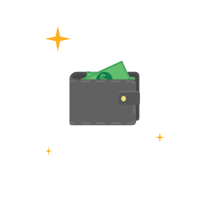

Setting up your GoGo Wallet
This quick guide will show you how to setup a connection between your Android™ device
with your GoGo Wallet™
Step 1
On your Android™ device, open your app drawer and choose 'Settings'.
Scroll down and select 'Bluetooth'.
Step 2
Under 'Available Devices', look for 'XXXXXX' and select this device.
While a connection is being established, it should ask for a PIN. Enter the following code:
1234